The world is already a scary, confusing place so I always appreciate when design makes things a little better. I love when something I thought was going to be difficult or confusing ends up being easy-peasy, and I do everything I can to pay it forward so someone else can have a glimmer of hope in these unprecedented times mired by uncertainty and confusion. Uh, well anyway... I have been using Figma almost exclusively since 2020 (and it's been wild to see it grow!) and have experience with other tools and techniques too.
Tools
- Figma
- Axure
- Sketch
- Literal sketch (pen and paper)
- Adobe Suite
- Balsamiq
NCR (2019-2025)
- Design system
- Figma, Figjam, Figma Make
- Developer relations
- Agile workflow
At NCR, I worked as part of a team and individually. As a team we made the software for a white label self-service food ordering kiosk. I designed and implemented a flow chart and naming system to give names to all pages to identify where they go in the flow or sub-flow. Having this standard lets developers and designers reference specific and nuanced parts of the app using the same unambiguous language.
During the pandemic I worked solo to design a mobile web app for restaurant customers to pay their bill on their own device to minimize contact between restaurant staff and diners. I created a mini design system and prototyped interactive flows, all in Figma.
Later I continued working alone on larger projects to completely redesign the software updating system for NCR hardware, and completely relaunch the configuration tool for NCR hardware from a Windows app to a web-based tool. These projects were also very technical so I collaborated heavily with the experts and business partners to discover what worked well about the old product and what needs to be improved. We had long conversations about user goals, diagrammed flows, and dreamed about how to improve this convoluted process. The NCR design system was spinning up at this point and I was one of the first designers to really put it to the test, give feedback, and contribute components.
The final project I worked on was a huge restaurant management system for owners/operators to run everything about their restaurant business from scheduling workers, to looking at sales data, to managing inventory of food ingredients. We worked with a third party development company to get things started and then transitioned to our in-house developers. The design system was fully mature at this point and we used it exclusively. I also had the opportunity to mentor a junior designer! Since this was a huge project, we used an agile workflow to keep in sync with product, design, and the third party developers. I also ran meetings with the developers only (a safe space away from the project managers) to ask any immediate questions, see progress, and just make sure everything was going smoothly.
Throughout these projects we baked accessibility in. Aside from being the right thing to do, it's a major selling point. Our food ordering kiosk hardware has a D-pad and a headphone jack, so we designed our non-touchscreen interactions around those. For screen-based interactions we consulted our accessibility expert and WCAG standards to ensure access for all.
This feature started with requirements from the business people for a report about the cost of everything sold. This should help answer the question: "am I making money?" by telling you how much of a menu item's cost goes towards its ingredients, and walking you through the calculation so you can see where any problems are.
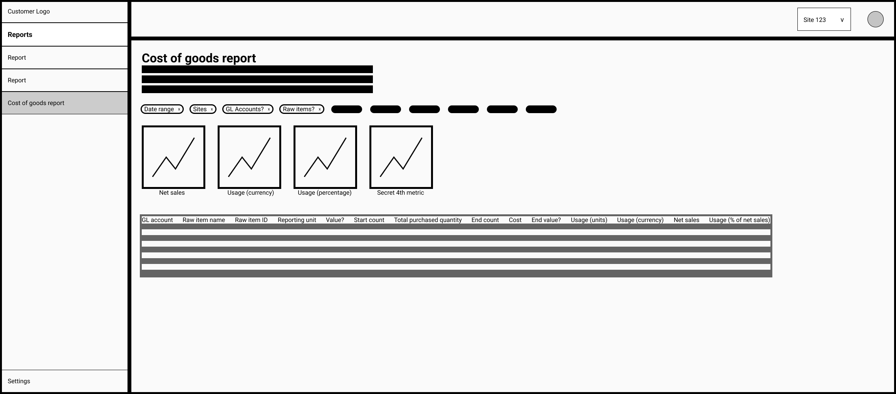
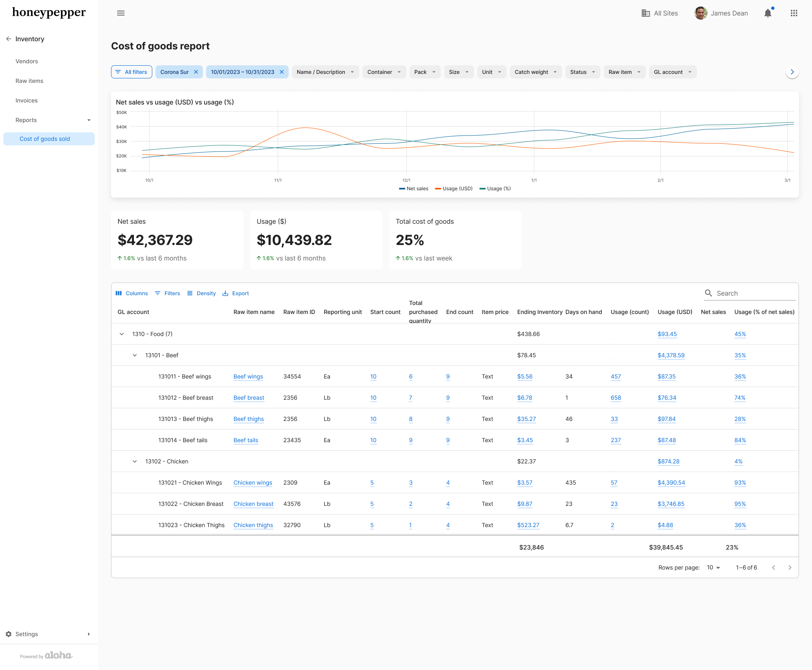
Low fidelity and high fidelity versions
And sometimes you have to come up with a lot of versions of something until you're happy and all the stakeholders are happy...
 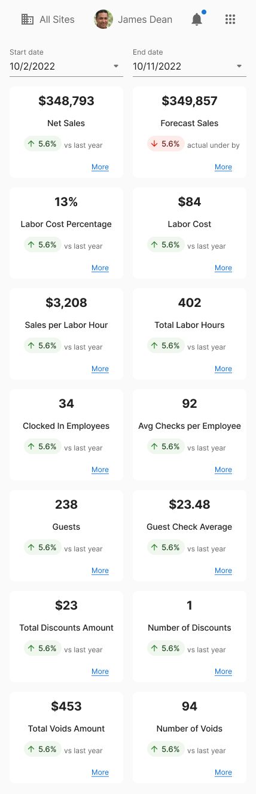
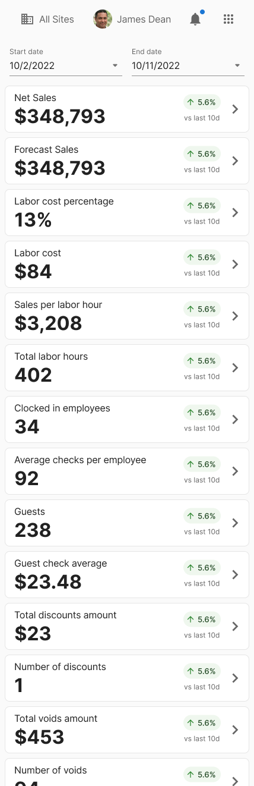
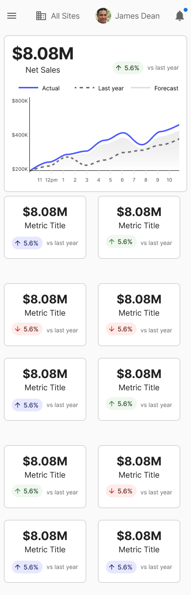
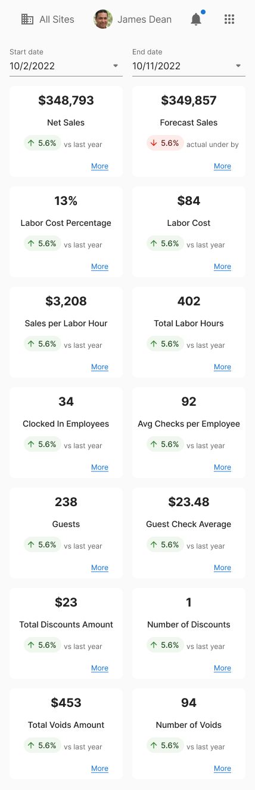
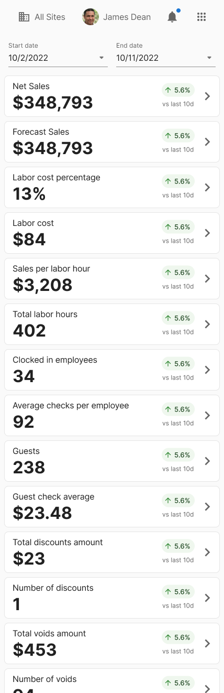
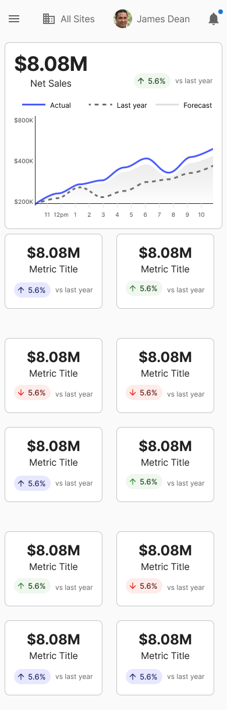
Iterate, iterate, iterate...
Elavon (2016-2018)
- Baby's first job
- Corporate life
 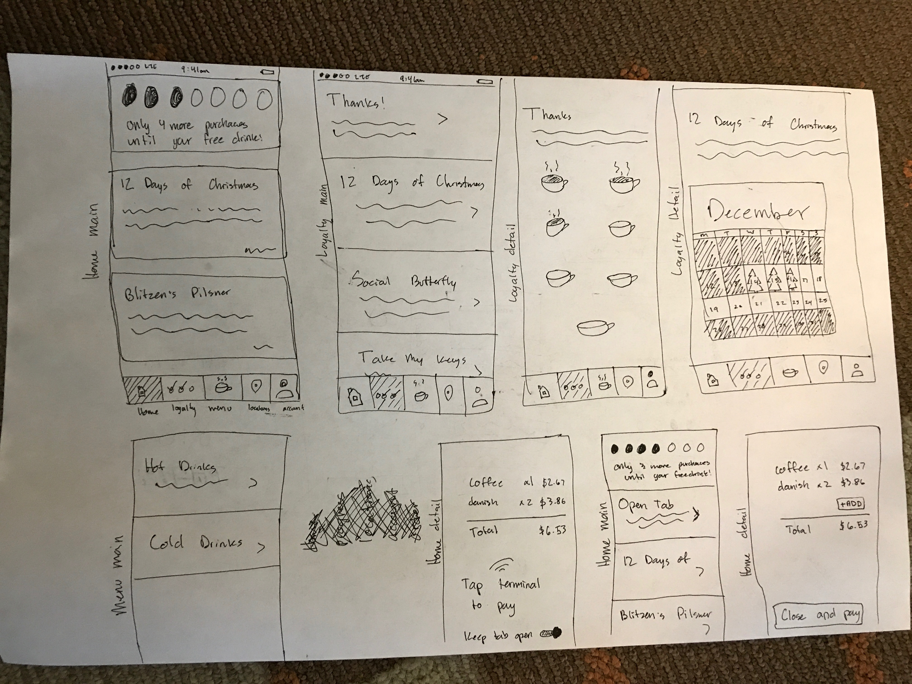
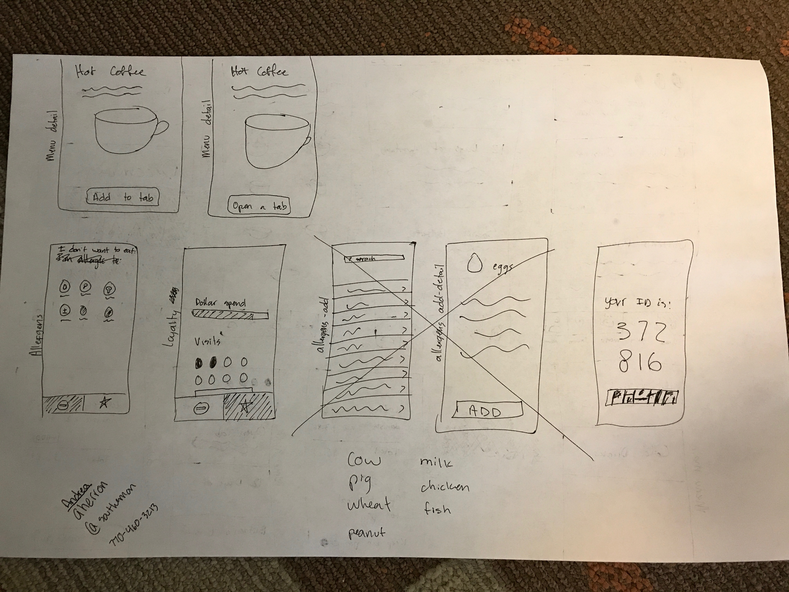
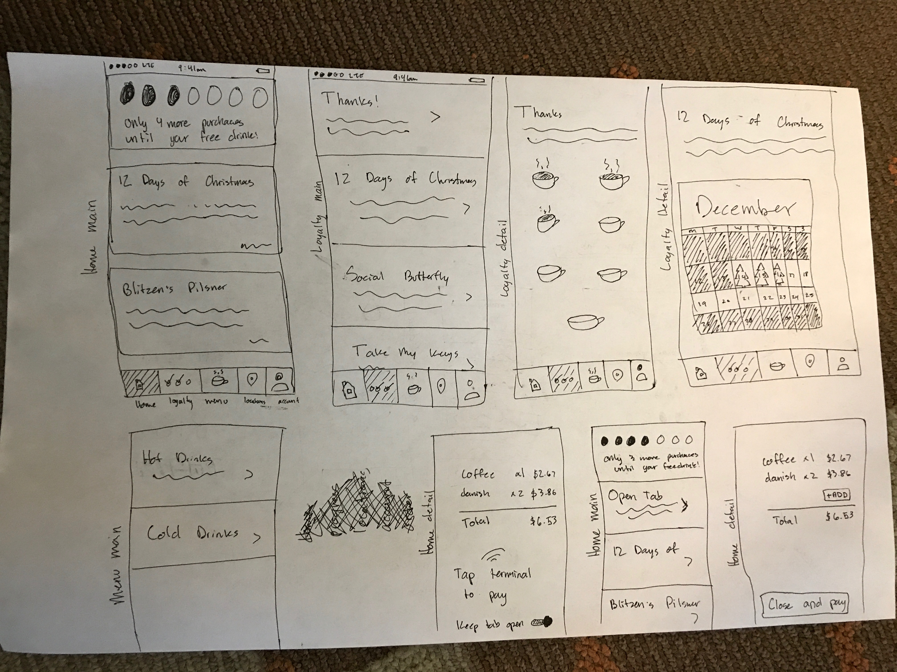
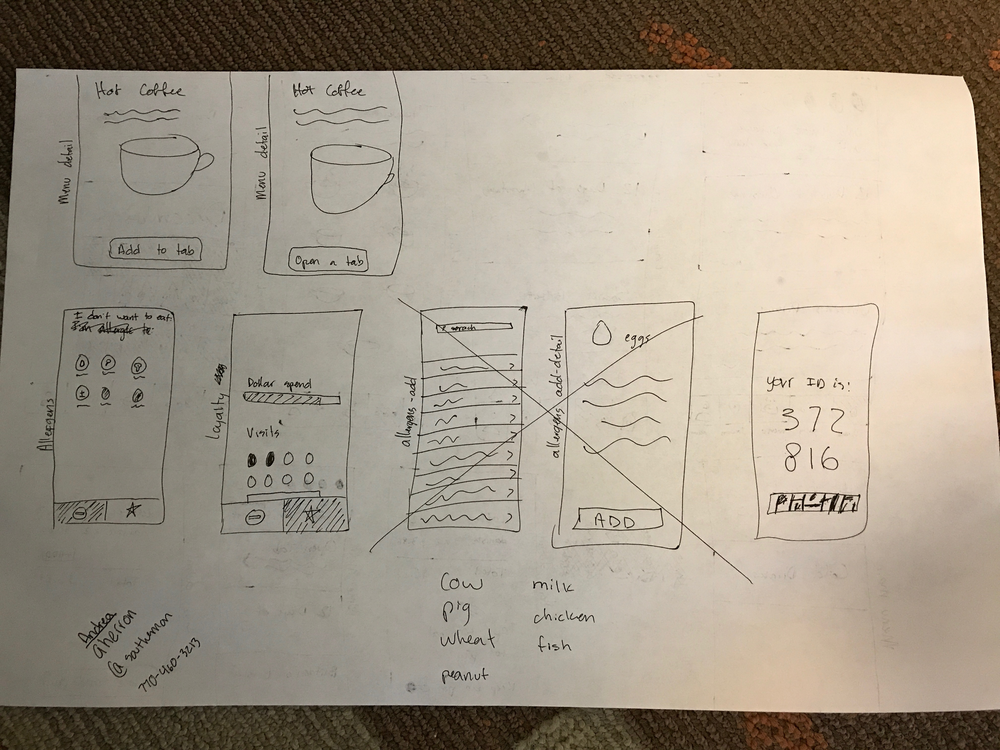
Sketches for Elavon project (Fanfare), and hackathon ideas
When I was with Elavon, I worked on the initial design phase of a developer portal project, I researched competitors, similar products, and services, gathered existing feedback we already had, identified personas, wrote user stories, identified red route user journeys, and organized the information architecture.

Information architecture for the Elavon developer portal project
Side Work
Worked with the Georgia Tech Glee Club to design an event and people management system for them to keep track of the gigs and attendance.
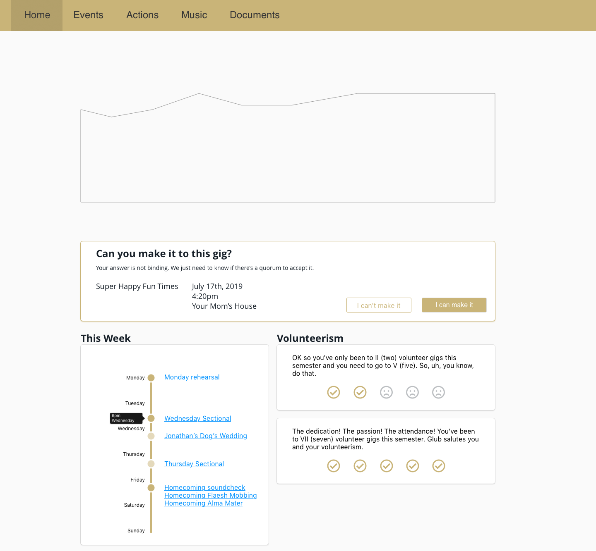

Homepage for the Glee Club management site
Can't put everything out on the internet for everyone to see, so happy to show more work via screenshare